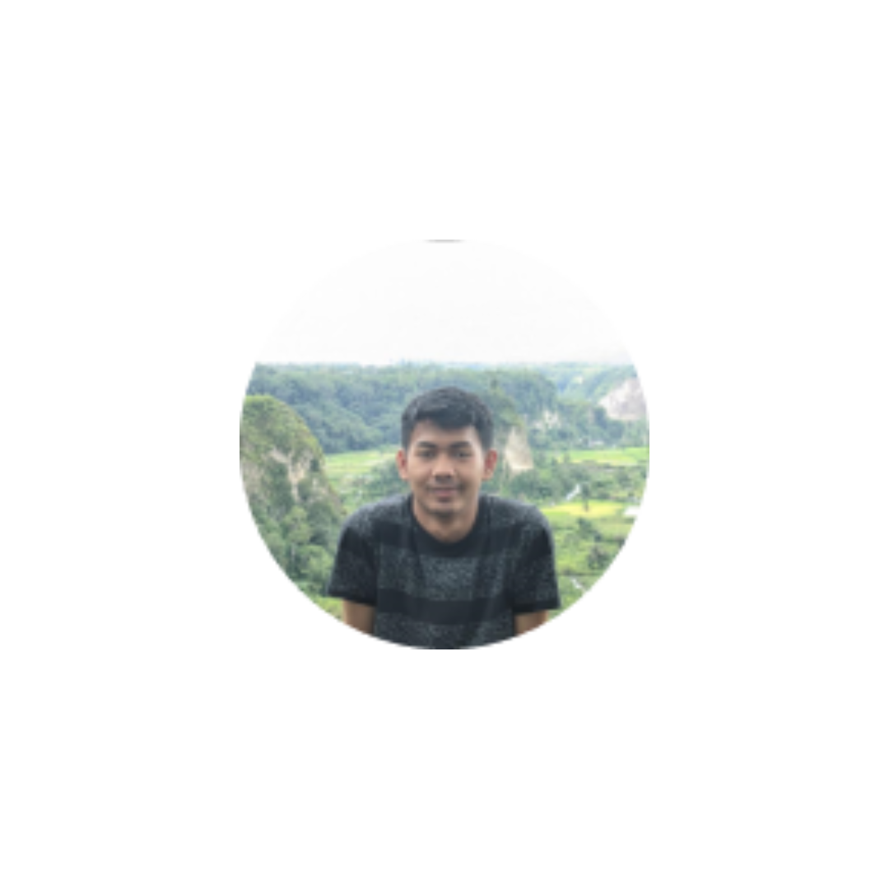

Tentang EcoChange
Eco Change adalah Yayasan dan Wirausaha Sosial dengan komunitas berbasis online di Indonesia yang didirikan pada tahun 2023 oleh Tim FS-19 dengan tujuan mengajak masyarakat Indonesia untuk menjalani gaya hidup bebas sampah (Zero Waste Lifestyle).


Eco Change adalah Yayasan dan Wirausaha Sosial dengan komunitas berbasis online di Indonesia yang didirikan pada tahun 2023 oleh Tim FS-19 dengan tujuan mengajak masyarakat Indonesia untuk menjalani gaya hidup bebas sampah (Zero Waste Lifestyle). Zero Waste Lifestyle adalah sebuah gaya hidup untuk meminimalisasi produksi sampah yang dihasilkan dari masing-masing individu yang akan berakhir di tempat pembuangan akhir (TPA) dalam upaya menjaga kelestarian lingkungan.
Eco Change mengambil peran aktif untuk senantiasa menyebarkan kesadaran akan pentingnya mengadopsi pola pikir yang lebih bijaksana dalam pengelolaan sampah dengan mengimplementasikan 6R (Rethink, Refuse, Reduce, Reuse, Recycle, and Rot) melalui pemberian kiat-kiat gaya hidup bebas sampah yang bermanfaat serta informasi seputar isu penanganan limbah dan keterkaitannya dengan keberlangsungan lingkungan hidup.
Mengusung visi sebagai one-stop-solution platform dan payung informasi mengenai gaya hidup minim sampah di nusantara, Eco Change juga wadah berkumpulnya para individu, aktivis lingkungan, komunitas, dan semua pihak yang peduli akan kelestarian lingkungan hidup.
Platform EcoChange Memiliki 3 Tujuan sebagai sarana
Dengan Eco Change Indonesia, kami percaya bahwa ada 5 elemen yang ingin kami sentuh dan itulah dasar keberhasilan untuk perubahan.
- Komunitas
- Media
- Pemerintah
- Pelaku industri
- Akademisi

Orang Lain Tentang Kami
Saya sangat senang menemukan platform ini! Ini memberi saya kesempatan untuk berhubungan dengan orang lain yang memiliki minat yang sama. Saya telah bertemu teman-teman hebat dan merasa lebih terhubung
Muhammad Afif
Mahasiswa
Saya tidak hanya berinteraksi di platform ini, tetapi juga telah bertemu beberapa teman yang saya temui di sini dalam kehidupan nyata. Itu luar biasa bagaimana teknologi bisa mempertemukan orang
Ilham Firmansyah
Mahasiswa
Saya ingin memberikan pujian untuk dukungan pelanggan platform ini. Mereka selalu responsif dan membantu saya menyelesaikan masalah dengan cepat. Itu membuat pengalaman saya di sini lebih baik